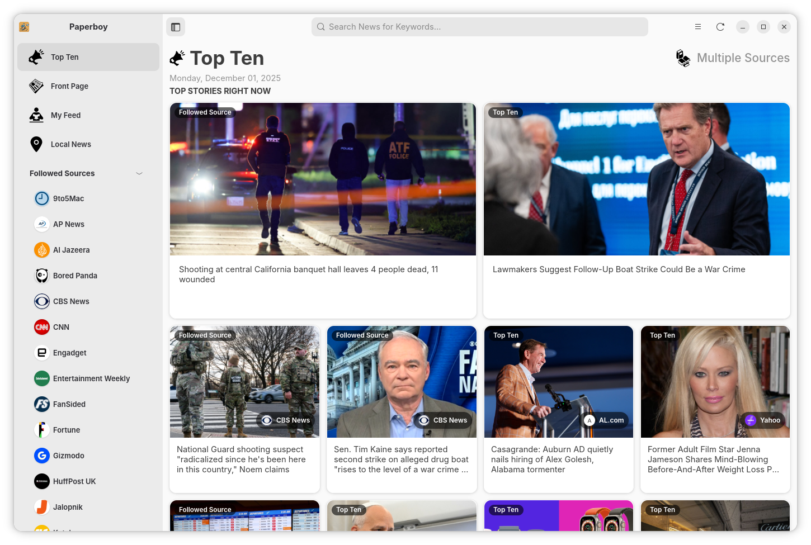
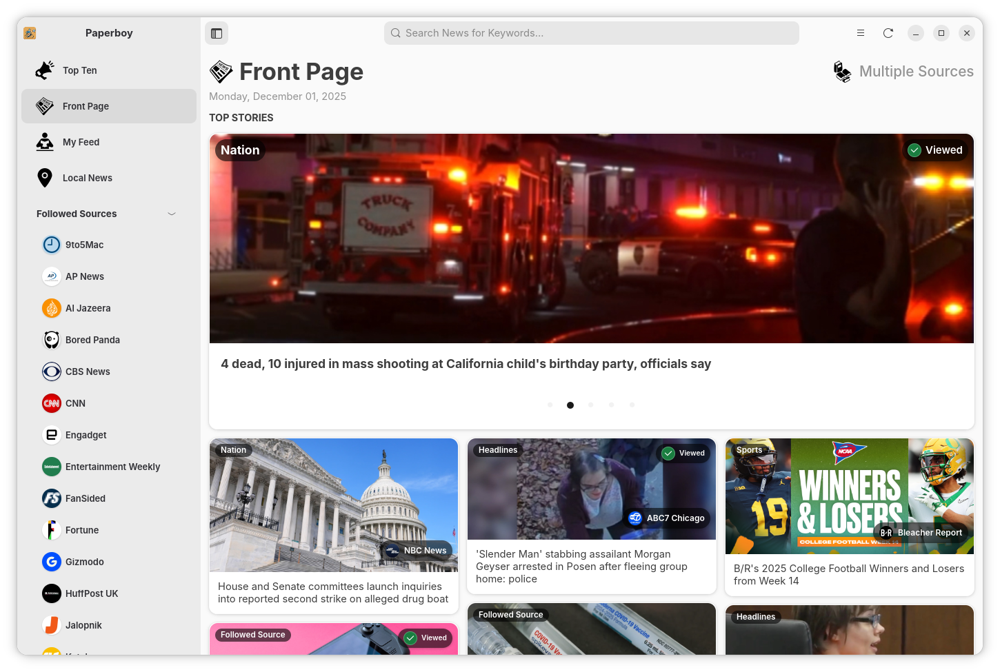
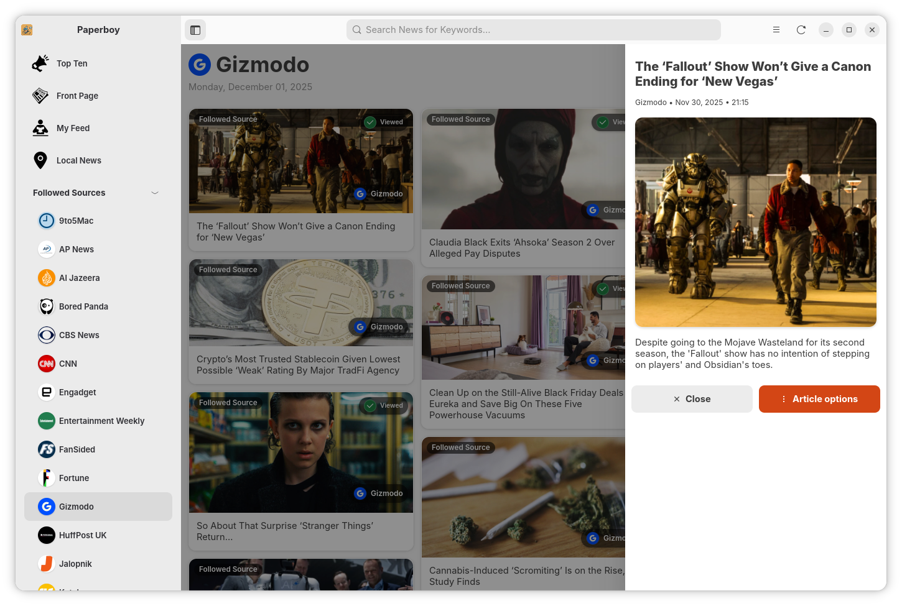
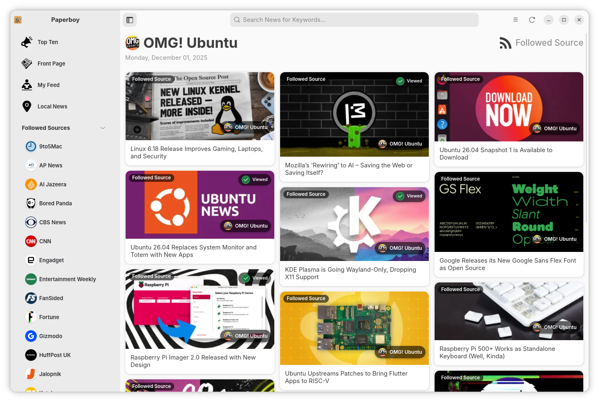
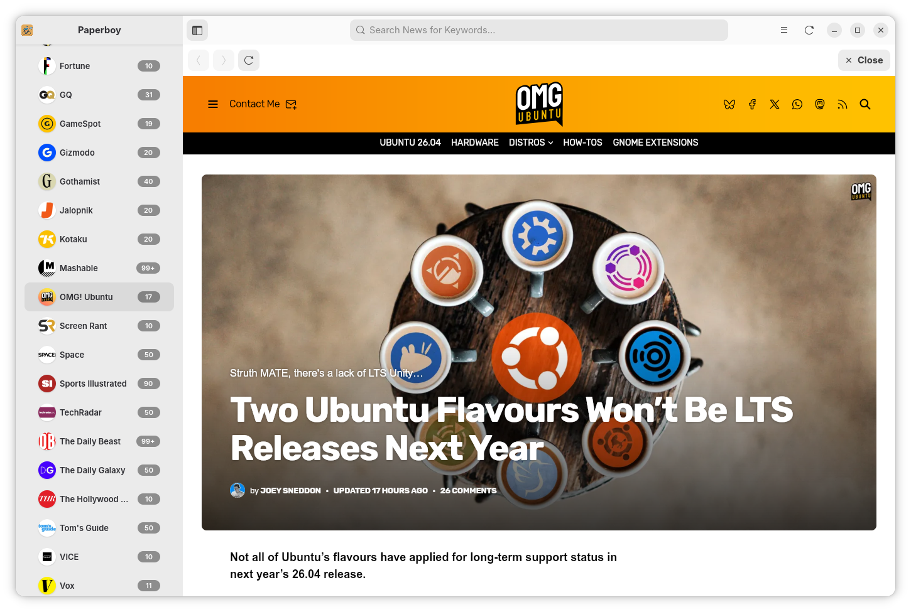
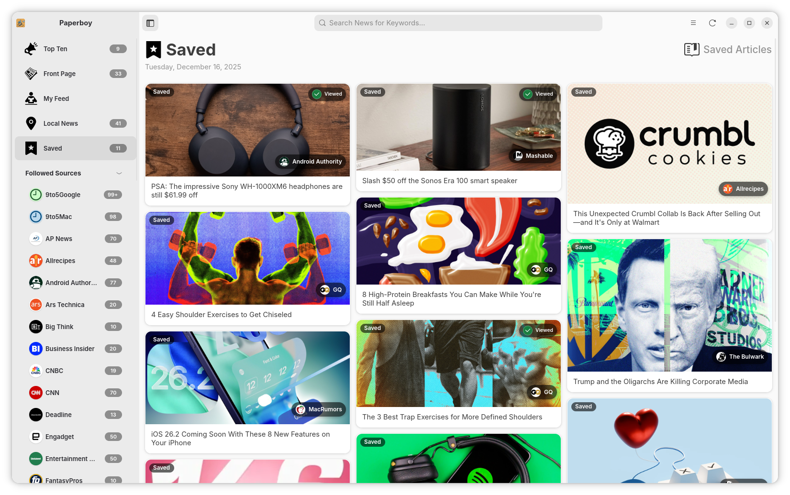

Paperboy
A simple news app written in Vala and built with GTK4 and Libadwaita. Paperboy aims to be a beautiful native news reader similar to Apple News — curated sources, custom feeds, and local news support.
🚀 Features
- 📰 Curated sources out of the box – including The Guardian, Reddit, BBC, and FOX News.
- ⚡ Powered by PaperboyAPI – fetches articles from multiple sources and categories seamlessly.
- ⭐ Follow news sources – users can add sources they find through the API.
- 📡 RSS feed support – add any RSS feeds to Paperboy to follow additional websites or blogs.
- 🛠️ Customizable feeds – mix and match sources and categories to create your own personalized news stream.
- 📖 In-app article viewing – read articles without leaving the app.
- 🌍 Local news support – stay updated on what’s happening in your area.
Note: Paperboy is in active development (alpha). Expect changes and occasional breakage.
Screenshots






Download
Project Repository
Project repository: github.com/thecalamityjoe87/paperboy
Open issues or feature requests on the project's Issues page.